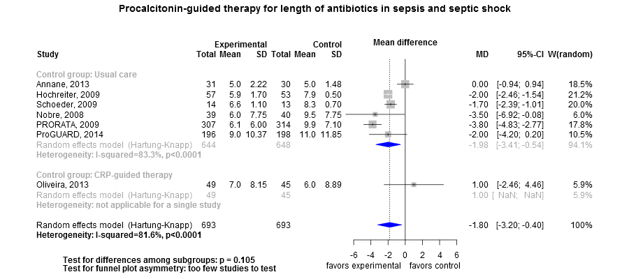
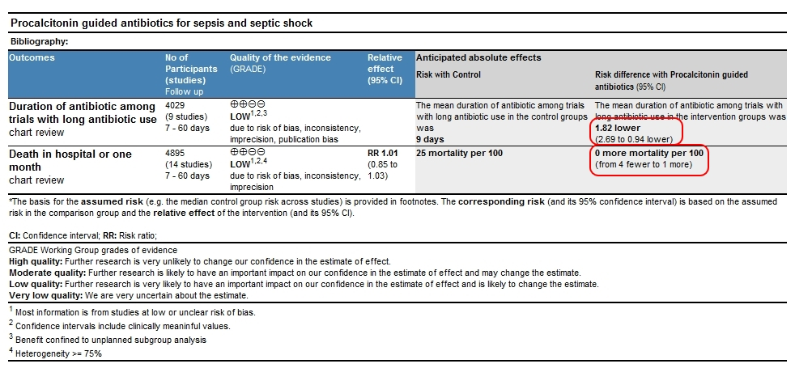

Clinical summary (under construction):
This meta-analysis suggests that the clinical intervention is effective at reducing duration of antibiotics;
however, meta-regression indicates that the benefit inversely correlates independently with the number of days until protocols first allowed cessation of antitbiotics.
The heterogeneity was partly by this factor (see meta-regression below) yielding heterogeneity that was 'moderate' (residual I2 = 49%).
The quality of evidence is low due to quality of trials and small number of subjects studied.
Results may also be compromised by lack of control group optimization (
see WikiDoc). When the qualty of care is not optimized in the control group, the intervention may show benefit that is not truly due to the intervention but to the standardization of care broght on by the intervention. Only the trial by Oliviera had an explicit protocol for the control group and this study did not find benefit from PCT-guided therapy.
Additional interpretations may be in the references in the 'Cited by' section below.
Methods overview: Studies were abstacted into standardized tables of , and results. This repository updates a previously published meta-analysis.(1) Newer studies included are listed in the references. Rationale for newer trials excluded may be listed at the end of the references.
Results: Details of the studies included are in the:
Below is the forest plot for the primary outcome. Additional Forest plots may be available.

The Summary of Findings Table (SoF) from the GRADE Profile is below (source files).

References:
Systematic review(s)
Most recent review(s) at time of last revision of this repository
- Wirz Y, Meier MA, Bouadma L, Luyt CE, Wolff M, Chastre J, Tubach F, Schroeder S, Nobre V, Annane D, Reinhart K, Damas P, Nijsten M, Shajiei A, deLange DW, Deliberato RO, Oliveira CF, Shehabi Y, van Oers JAH, Beishuizen A, Girbes ARJ, de Jong E, Mueller B, Schuetz P. Effect of procalcitonin-guided antibiotic treatment on clinical outcomes in intensive care unit patients with infection and sepsis patients: a patient-level meta-analysis of randomized trials. Crit Care. 2018 Aug 15;22(1):191. doi: 10.1186/s13054-018-2125-7. PubMed PMID: 30111341.
- Lam SW, Bauer SR, Fowler R, Duggal A. Systematic Review and Meta-Analysis of Procalcitonin-Guidance Versus Usual Care for Antimicrobial Management in Critically Ill Patients: Focus on Subgroups Based on Antibiotic Initiation, Cessation, or Mixed Strategies. Crit Care Med. 2018 Jan 2. doi: 10.1097/CCM.0000000000002953. [Epub ahead of print] PubMed PMID: 29293146
- Iankova I, Thompson-Leduc P, Kirson NY, Rice B, Hey J, Krause A, et al. Efficacy and Safety of Procalcitonin Guidance in Patients With Suspected or Confirmed Sepsis: A Systematic Review and Meta-Analysis. Crit Care Med. 2017 Dec 21. doi: 10.1097/CCM.0000000000002928. [Epub ahead of print] PMID: 29271844.
- Huang HB, Peng JM, Weng L, Wang CY, Jiang W, Du B. Procalcitonin-guided antibiotic therapy in intensive care unit patients: a systematic review and meta-analysis. Ann Intensive Care. 2017 Nov 22;7(1):114. doi: 10.1186/s13613-017-0338-6. PubMed PMID: 29168046
- Andriolo BN, Andriolo RB, Salomão R, Atallah ÁN. Effectiveness and safety of procalcitonin evaluation for reducing mortality in adults with sepsis, severe sepsis or septic shock. Cochrane Database Syst Rev. 2017 Jan 18;1:CD010959. doi: 10.1002/14651858.CD010959.pub2. PMID: 28099689 Included any sepsis
- Westwood M, Ramaekers B, Whiting P, Tomini F, Joore M, Armstrong N, Ryder S, Stirk L, Severens J, Kleijnen J. Procalcitonin testing to guide antibiotic therapy for the treatment of sepsis in intensive care settings and for suspected bacterial infection in emergency department settings: a systematic review and cost-effectiveness analysis. Health Technol Assess. 2015 Nov;19(96):1-236. DOI: 10.3310/hta19960 PMID: 26569153
- Prkno A, Wacker C, Brunkhorst FM, Schlattmann P. Procalcitonin-guided therapy in intensive care unit patients with severe sepsis and septic shock--a systematic review and meta-analysis. Crit Care. 2013 Dec 11;17(6):R291. doi: 10.1186/cc13157. PMID: 24330744; PMCID: PMC4056085Included only severe sepsis and septic shock
Studies
New Studies not included in any prior review above
- None
Studies undergoing review
- Jeon K, Suh JK, Jang EJ, Cho S, Ryu HG, Na S, Hong SB, Lee HJ, Kim JY, Lee SM. Procalcitonin-Guided Treatment on Duration of Antibiotic Therapy and Cost in Septic Patients (PRODA): a Multi-Center Randomized Controlled Trial. J Korean Med Sci. 2019 Apr 15;34(14):e110. doi: 10.3346/jkms.2019.34.e110. PMID: 30977312.
Systematic reviews undergoing review
- 1: Pepper D, Sun J, Rhee C, Welsh J, Powers JH, Danner RL, Kadri SS. Procalcitonin-Guided Antibiotic Discontinuation and Mortality in Critically Ill Adults: A Systematic Review and Meta-Analysis. Chest. 2019 Feb 14. pii: S0012-3692(19)30154-0. doi: 10.1016/j.chest.2018.12.029. PMID: 30772386.
Studies excluded - selected list of important studies
- Najafi A, Khodadadian A, Sanatkar M, Shariat Moharari R, Etezadi F, Ahmadi A, Imani F, Khajavi MR. The Comparison of Procalcitonin Guidance Administer Antibiotics with Empiric Antibiotic Therapy in Critically Ill Patients Admitted in Intensive Care Unit. Acta Med Iran. 2015;53(9):562-7. PMID: 26553084 Proportion of patients infected not reported so coould not verify that at least 75% of patients had sepsis. Otherwise, could have included length of stay and mortality. Reduction in days of antibiotics not reported in a way to combine with other studies. Author has been queried 9/7/2016.
- Jensen JU, Hein L, Lundgren B, Bestle MH, Mohr TT, Andersen MH, et al; Procalcitonin And Survival Study (PASS) Group.. Procalcitonin-guided interventions against infections to increase early appropriate antibiotics and improve survival in the intensive care unit: a randomized trial. Crit Care Med. 2011 Sep;39(9):2048-58. doi: 10.1097/CCM.0b013e31821e8791. PMID: 21572328 Proportion of patients with underlying sepsis not specified; author has been queried May 08, 2017.
- Bouadma L, Luyt CE, Tubach F, Cracco C, Alvarez A, Schwebel C, et al; PRORATA trial group. Use of procalcitonin to reduce patients' exposure to antibiotics in intensive care units (PRORATA trial): a multicentre randomised controlled trial. Lancet. 2010 Feb 6;375(9713):463-74. doi: 10.1016/S0140-6736(09)61879-1. PMID: 20097417 Proportion of patients with underlying sepsis not specified; author has been queried May 10, 2017.
Funding for this review
- None.
Cited by
This repository is cited by:
- WikiDoc contributors. Procalcitonin. WikiDoc. November 28, 2016. Available at: http://www.wikidoc.org/index.php/Procalcitonin. Accessed November 28, 2016.
{kind=link}
{kind=link}
{kind=link}